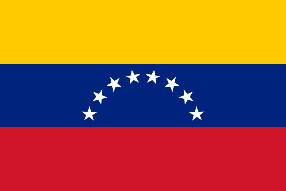
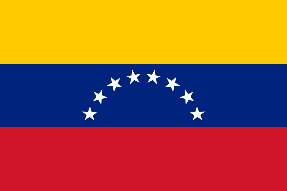
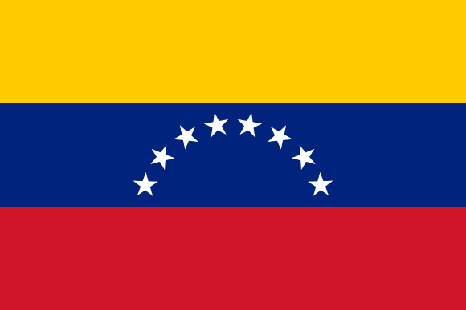
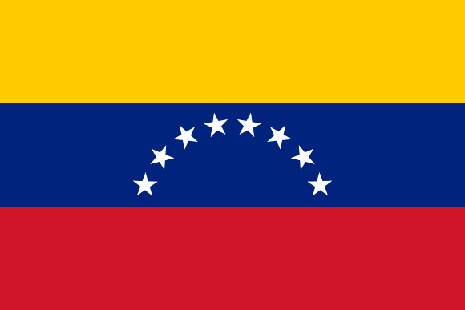

Ciber-Inteligencia Osint Latinoamerica V1.5
Ciber-Inteligencia Osint Latinoamerica V1.5 
Ciber-Inteligencia Osint Latinoamerica V1.5

Ciber-Inteligencia Osint Latinoamerica V1.5
Open Source Intelligence (Osint) es la recopilación y análisis de información que se obtiene de fuentes públicas o abiertas. [2] Osint se utiliza principalmente en las funciones de seguridad nacional, aplicación de la ley e inteligencia comercial, y es valioso para los analistas que utilizan inteligencia no sensible para responder a requisitos de inteligencia clasificados, no clasificados o de propiedad exclusiva en las disciplinas de inteligencia anteriores.Fuente:wikipedia
En el Mundo del Ciber-Espacio cada día se genera un nuevo espacio geográfico creando futuros de conflictos inciertos dentro de los ecosistemas visibles o no, por ello necesitamos crear procesos y entornos flexibles en el ambiente tecnológico que puedan defenderse y protegerse de Ciber-Ataques. Las organizaciones necesitan personal con habilidades IT y Ciber-Inteligencia que puedan prevenir eventos y generar respuestas oportunas, modelos de Ciber-Investigación que permitan crear las bases necesaria para mitigar las Ciber-Amenazas. Los retos están ahí a la orden del día Ciber-Terrorismo, Ciber-guerra ,Ciber-Delincuencia,Fakenews,Ciber-Bulliyng, Ciber-Acoso, vulnerabilidades IOT (Internet de las cosas).
Nuestro proyecto de Ciber-Inteligencia Osint Latinoamérica V1.5 está basado en el desarrollo de un framework, donde cualquier comunidad pueda realizar investigaciones en el campo de la inteligencia, creando un modelo para identificar toda la información localizada en el ciberespacio. Sabemos que hay una demanda cada vez más importante de recolección de datos y análisis que debe ser monitoreada. Nuestro modelo va dirigido especialmente a la región Latinoamérica adaptándolo a cada país por infraestructura, cultura y costumbres. Es vital para nosotros construir fuentes de enlace con las comunidades de estos países, la evaluación de amenazas y la máxima recopilación, procesamiento y análisis de datos de fuentes abiertas para la Identificación de escenarios de riesgo digital como.
Nuestro desarrollo: Ciber-Inteligencia Osint Latinoamérica V1.5
| Referencia de Fuentes Abiertas/Empresas /Especialistas | Descripcion | Idioma | Alcance |
|---|---|---|---|
| https://osintframework.com/ | Metodo | Ingles | Mundial |
| https://osint.link/ | Metodo | Ingles | Mundial |
| http://osint.thegelios.com/ | Metodo | Ruso | Rusia/Ukrania |
| http://rr.reuser.biz/ | Metodo | Ingles | Mundial |
| https://github.com/Ph055a/OSINT-Collection | Metodo | Ingles | Mundial |
| http://www.onstrat.com/osint/ | Metodo | Ingles | Mundial |
| https://www.osinttechniques.com/osint-tools.html | Metodo | Ingles | Mundial |
| https://yoga.osint.ninja/ | Metodo | Ingles | Mundial |
| https://atlas.mindmup.com/digintel/digital_intelligence_training/index.html# | Metodo | Ingles/Aleman/Holandes | Mundial |
| https://docs.google.com/document/d/1BfLPJpRtyq4RFtHJoNpvWQjmGnyVkfE2HYoICKOGguA/edit | Metodo | Ingles | Mundial |
| https://osintpost.com/open-source-investigation-guides/ | Metodo | Ingles | Mundial |
| https://github.com/jivoi/awesome-osint | Metodo | Ingles | Mundial |
| https://www.facebook.com/OpenSourceIntelligenceBrasil | Servicios/Cursos | Portugues | Mundial |
| https://inteltechniques.com/menu.html | Metodo/Academia/Cursos | Ingles | Mundial |
| https://ciberpatrulla.com/links/ | Metodo/Academia/Cursos | Español | Mundial |
| https://www.toddington.com/resources/ | Metodo/Academia/Cursos | Ingles | Mundial |
| https://osintlatamgroup.com/ | Empresa/Academia/Servicios/Cursos | Español | Latinoamerica/Argentina/España |
| https://ginseg.com/ | Empresa/Academia/Servicios/Cursos | Ingles/Español | Mundial |
| https://quantika14.com/ | Empresa/Academia/Servicios/Cursos | Español | España |
| https://www.sans.org/course/open-source-intelligence-gathering | Empresa/Academia/Servicios/Cursos | Ingles | Mundial |
| https://academy.isecauditors.com/curso-tecnicas-osint | Empresa/Academia/Servicios/Cursos | Ingles/Español | Mundial |
| https://www.campusciberseguridad.com/masters/master-en-ciberinteligencia | Empresa/Academia/Servicios/Cursos | Ingles | Mundial |
| https://www.dragonjar.org/ | Empresa/Academia/Servicios/Cursos | Ingles | Mundial |
| https://cisde.es/ | Empresa/Academia/Servicios/Cursos | Ingles/Español | Mundial |
| https://www.sites.oas.org/cyber/Es/Paginas/default.aspx | Seguridad Cibernética de la Organización de los Estados Americanos (OEA) | Ingles/Español | Mundial |
| https://institutolazarus.com.ve/ | Empresa/Academia/Servicios/Cursos | Español | Venezuela |
| http://elhackerbueno.com/ | Empresa/Academia/Servicios/Cursos | Ingles/Español | Latinoamerica/Peru/España |
| http://www.reydes.com/d/?q=Curso_de_OSINT | Empresa/Academia/Servicios/Cursos | Ingles/Español | Latinoamerica/Peru/España |